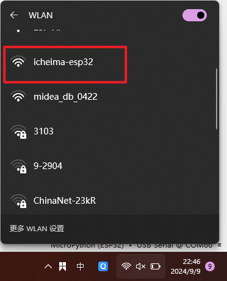
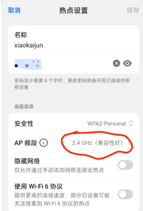
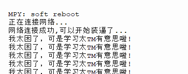

<!DOCTYPE lake>
<h2 data-lake-id="YAgx5" data-lake-index-type="2" id="YAgx5"><span data-lake-id="u739c9025" id="u739c9025">网络模式</span></h2><p data-lake-id="uad6d99c9" id="uad6d99c9"><span data-lake-id="u1689d888" id="u1689d888">STA（Station）模式和AP（Access Point）模式是无线网络中两种常见的工作模式。</span></p><h3 data-lake-id="f510abe3" id="f510abe3"><span data-lake-id="u69b32f11" id="u69b32f11">STA模式</span></h3><ol list="ue9b7106f"><li data-lake-id="ua718251b" fid="u43183323" id="ua718251b"><strong><span data-lake-id="ua25066c3" id="ua25066c3">定义</span></strong><span data-lake-id="ub4692f28" id="ub4692f28">：STA模式是指无线设备作为客户端连接到无线网络中的一个接入点（AP）。在此模式下，设备需要进行身份验证和连接才能访问网络资源。</span></li><li data-lake-id="u69dcd468" fid="u43183323" id="u69dcd468"><strong><span data-lake-id="u92163afa" id="u92163afa">使用场景</span></strong><span data-lake-id="u6028780d" id="u6028780d">：常见于笔记本电脑、智能手机、平板电脑等终端设备，它们通过连接到AP来访问互联网或局域网中的其他设备。</span></li><li data-lake-id="u057b20ae" fid="u43183323" id="u057b20ae"><strong><span data-lake-id="ubd0332f4" id="ubd0332f4">特点</span></strong><span data-lake-id="u701f582b" id="u701f582b">：</span></li></ol><ul data-lake-indent="1" list="u92c44b95"><li data-lake-id="u2e2e836e" fid="ud672838e" id="u2e2e836e"><span data-lake-id="ubac21572" id="ubac21572">通常只能连接到一个接入点。</span></li><li data-lake-id="u4b0ef81b" fid="ud672838e" id="u4b0ef81b"><span data-lake-id="u4896e94a" id="u4896e94a">设备在STA模式下只能作为用户终端，不能提供网络服务给其他设备。</span></li></ul><h3 data-lake-id="82ec9d5b" id="82ec9d5b"><span data-lake-id="u685ed16f" id="u685ed16f">AP模式</span></h3><ol list="u74886f4a"><li data-lake-id="u5ad7fe5d" fid="uf80f99c4" id="u5ad7fe5d"><strong><span data-lake-id="u61b4f8bd" id="u61b4f8bd">定义</span></strong><span data-lake-id="u2cf62229" id="u2cf62229">：AP模式是指无线设备作为接入点，能够为其他无线设备提供网络服务。在此模式下，设备充当一个中心点，允许其他无线设备连接并共享网络资源。</span></li><li data-lake-id="ufce55d80" fid="uf80f99c4" id="ufce55d80"><strong><span data-lake-id="u4e88f650" id="u4e88f650">使用场景</span></strong><span data-lake-id="u4f2e1907" id="u4f2e1907">：通常用于无线路由器或无线接入设备，使得其他无线设备（如手机、笔记本电脑等）能够连接到网络。</span></li><li data-lake-id="u6798f1f5" fid="uf80f99c4" id="u6798f1f5"><strong><span data-lake-id="uf4bc86fc" id="uf4bc86fc">特点</span></strong><span data-lake-id="uf268617e" id="uf268617e">：</span></li></ol><ul data-lake-indent="1" list="uf548f5fc"><li data-lake-id="ub68b6d4c" fid="u2ad40927" id="ub68b6d4c"><span data-lake-id="ub8ea77ad" id="ub8ea77ad">可以支持多个STA连接。</span></li><li data-lake-id="u362a6741" fid="u2ad40927" id="u362a6741"><span data-lake-id="u7e5ec28d" id="u7e5ec28d">提供无线网络服务，允许其他设备通过它访问互联网或局域网。</span></li></ul><h3 data-lake-id="25f9c7fa" id="25f9c7fa"><span data-lake-id="u254cbd12" id="u254cbd12">总结</span></h3><ul list="u50fa32ee"><li data-lake-id="u9b10bd80" fid="u94d73738" id="u9b10bd80"><strong><span data-lake-id="ueadc0adb" id="ueadc0adb">STA模式</span></strong><span data-lake-id="u0416cd3a" id="u0416cd3a">主要是客户端的角色，连接到网络，获取数据；</span></li><li data-lake-id="u98c1386c" fid="u94d73738" id="u98c1386c"><strong><span data-lake-id="uc083fb72" id="uc083fb72">AP模式</span></strong><span data-lake-id="uf49682b4" id="uf49682b4">则是提供网络服务的角色，允许其他设备连接并使用网络资源。</span></li></ul><p data-lake-id="uf15afb29" id="uf15afb29"><span data-lake-id="uc75ef602" id="uc75ef602">这两种模式可以根据具体的应用需求灵活使用。例如，在家庭或办公室环境中，路由器一般工作在AP模式，而连接到路由器的设备则处于STA模式。</span></p><p data-lake-id="u00a2bc92" id="u00a2bc92"><span data-lake-id="u87d466ad" id="u87d466ad">​</span><br/></p><h2 data-lake-id="KpYCO" data-lake-index-type="2" id="KpYCO"><span data-lake-id="ue30c6e7f" id="ue30c6e7f">AP 模式</span></h2><h3 data-lake-id="X9918" data-lake-index-type="2" id="X9918"><span data-lake-id="uf7cfcbea" id="uf7cfcbea">导包</span></h3><span class="yuque-card-unsupported">[codeblock]</span><h3 data-lake-id="TKlli" data-lake-index-type="2" id="TKlli"><span data-lake-id="u5fa97f79" id="u5fa97f79">初始化AP</span></h3><span class="yuque-card-unsupported">[codeblock]</span><h3 data-lake-id="WpHSx" data-lake-index-type="2" id="WpHSx"><span data-lake-id="u9d6fda01" id="u9d6fda01">查看结果</span></h3><p data-lake-id="u20d435a2" id="u20d435a2" style="text-align: center"></p><h2 data-lake-id="oXHUP" data-lake-index-type="2" id="oXHUP"><span data-lake-id="u02597275" id="u02597275">STA模式</span></h2><p data-lake-id="u017972b7" id="u017972b7"><span data-lake-id="u116929d7" id="u116929d7">注意：我们连接的网络必须得是2.4Ghz的网络，且网络SSID不能有中文特殊符号等</span></p><p data-lake-id="uc7656a24" id="uc7656a24" style="text-align: center"></p><h3 data-lake-id="pUDfD" data-lake-index-type="2" id="pUDfD"><span data-lake-id="u4d7d9177" id="u4d7d9177">导包</span></h3><span class="yuque-card-unsupported">[codeblock]</span><h3 data-lake-id="XP1Ex" data-lake-index-type="2" id="XP1Ex"><span data-lake-id="u23e17c98" id="u23e17c98">初始化为STA</span></h3><span class="yuque-card-unsupported">[codeblock]</span><p data-lake-id="u1e67979c" id="u1e67979c" style="text-align: center"></p><p data-lake-id="u13ac91bb" id="u13ac91bb" style="text-align: center"><br/></p><p data-lake-id="u054adbcd" id="u054adbcd" style="text-align: center"><br/></p><h2 data-lake-id="saWC4" data-lake-index-type="2" id="saWC4"><span data-lake-id="u6cd36375" id="u6cd36375">发起网络请求</span></h2><p data-lake-id="u4d82ceae" id="u4d82ceae"><span data-lake-id="ub4b529b0" id="ub4b529b0">通过使用requests获取网络上的数据</span></p><h3 data-lake-id="JbInd" data-lake-index-type="2" id="JbInd"><span data-lake-id="u4fd61921" id="u4fd61921">导包</span></h3><span class="yuque-card-unsupported">[codeblock]</span><h3 data-lake-id="Jg57s" data-lake-index-type="2" id="Jg57s"><span data-lake-id="uc0493211" id="uc0493211">发起请求</span></h3><span class="yuque-card-unsupported">[codeblock]</span><h3 data-lake-id="rTWJz" data-lake-index-type="2" id="rTWJz"><span data-lake-id="u827ae316" id="u827ae316">获取结果</span></h3><span class="yuque-card-unsupported">[codeblock]</span><h2 data-lake-id="AfLXp" data-lake-index-type="2" id="AfLXp"><span data-lake-id="u118a7a27" id="u118a7a27">NTP获取网络时间</span></h2><h3 data-lake-id="5f18815d" data-lake-index-type="2" id="5f18815d"><strong><span data-lake-id="u6267fe2a" id="u6267fe2a" style="color: rgb(64, 64, 64)">1. 格林尼治时间（Greenwich Mean Time, GMT）</span></strong></h3><ul list="ua75dadac"><li data-lake-id="u172601d6" fid="ubf2f5621" id="u172601d6"><strong><span class="lake-fontsize-12" data-lake-id="u81bd5ec0" id="u81bd5ec0" style="color: rgb(64, 64, 64)">定义</span></strong><span class="lake-fontsize-12" data-lake-id="ucba92987" id="ucba92987" style="color: rgb(64, 64, 64)">：<br/></span><span class="lake-fontsize-12" data-lake-id="u802628f6" id="u802628f6" style="color: rgb(64, 64, 64)">GMT 是以英国伦敦格林尼治天文台的本地平太阳时为基准的时间标准，曾是全球时间的参考点（本初子午线所在时区）。</span></li><li data-lake-id="uee2783d0" fid="ubf2f5621" id="uee2783d0"><strong><span class="lake-fontsize-12" data-lake-id="u2d46d9e1" id="u2d46d9e1" style="color: rgb(64, 64, 64)">特点</span></strong><span class="lake-fontsize-12" data-lake-id="uef915acf" id="uef915acf" style="color: rgb(64, 64, 64)">：</span></li></ul><ul data-lake-indent="1" list="ua75dadac"><li data-lake-id="u533ab4a6" fid="u8c513e62" id="u533ab4a6"><strong><span class="lake-fontsize-12" data-lake-id="u09a66805" id="u09a66805" style="color: rgb(64, 64, 64)">时区标识</span></strong><span class="lake-fontsize-12" data-lake-id="u670f5ab0" id="u670f5ab0" style="color: rgb(64, 64, 64)">：UTC+0（与协调世界时 UTC 在数值上一致，但 GMT 是时区，UTC 是时间标准）。</span></li><li data-lake-id="ua47563a9" fid="u8c513e62" id="ua47563a9"><strong><span class="lake-fontsize-12" data-lake-id="ua4c63cc8" id="ua4c63cc8" style="color: rgb(64, 64, 64)">历史地位</span></strong><span class="lake-fontsize-12" data-lake-id="u50faa479" id="u50faa479" style="color: rgb(64, 64, 64)">：过去广泛用于航空、航海和科学领域，现逐渐被</span><span class="lake-fontsize-12" data-lake-id="ufabe47b7" id="ufabe47b7" style="color: rgb(64, 64, 64)"> </span><strong><span class="lake-fontsize-12" data-lake-id="u1a3c05ac" id="u1a3c05ac" style="color: rgb(64, 64, 64)">UTC</span></strong><span class="lake-fontsize-12" data-lake-id="uda93d72b" id="uda93d72b" style="color: rgb(64, 64, 64)"> </span><span class="lake-fontsize-12" data-lake-id="ud39a0235" id="ud39a0235" style="color: rgb(64, 64, 64)">取代。</span></li><li data-lake-id="ucaee079e" fid="u8c513e62" id="ucaee079e"><strong><span class="lake-fontsize-12" data-lake-id="ue7e7f8b3" id="ue7e7f8b3" style="color: rgb(64, 64, 64)">夏令时</span></strong><span class="lake-fontsize-12" data-lake-id="u10ab3a51" id="u10ab3a51" style="color: rgb(64, 64, 64)">：英国本地时间（BST）在夏令时会调整为 UTC+1，但 GMT 本身不包含夏令时。</span></li></ul><hr/><h3 data-lake-id="4d491b55" data-lake-index-type="2" id="4d491b55"><strong><span data-lake-id="ub60e0ea9" id="ub60e0ea9" style="color: rgb(64, 64, 64)">2. 北京时间（China Standard Time, CST）</span></strong></h3><ul list="u30411f9f"><li data-lake-id="uf1eada28" fid="u6310b9b3" id="uf1eada28"><strong><span class="lake-fontsize-12" data-lake-id="u72977c4b" id="u72977c4b" style="color: rgb(64, 64, 64)">定义</span></strong><span class="lake-fontsize-12" data-lake-id="ud5db4c7c" id="ud5db4c7c" style="color: rgb(64, 64, 64)">：<br/></span><span class="lake-fontsize-12" data-lake-id="u8469c1d9" id="u8469c1d9" style="color: rgb(64, 64, 64)">中国采用的标准时间，覆盖全国（东八区），比 UTC 快 8 小时，</span><strong><span class="lake-fontsize-12" data-lake-id="u1f028b90" id="u1f028b90" style="color: rgb(64, 64, 64)">无夏令时</span></strong><span class="lake-fontsize-12" data-lake-id="u3f8baa74" id="u3f8baa74" style="color: rgb(64, 64, 64)">。</span></li><li data-lake-id="ucb0a8eb5" fid="u6310b9b3" id="ucb0a8eb5"><strong><span class="lake-fontsize-12" data-lake-id="uef6c258c" id="uef6c258c" style="color: rgb(64, 64, 64)">特点</span></strong><span class="lake-fontsize-12" data-lake-id="u3300f35e" id="u3300f35e" style="color: rgb(64, 64, 64)">：</span></li></ul><ul data-lake-indent="1" list="u30411f9f"><li data-lake-id="uc0c9822b" fid="u0e44212b" id="uc0c9822b"><strong><span class="lake-fontsize-12" data-lake-id="u51a4a4a2" id="u51a4a4a2" style="color: rgb(64, 64, 64)">时区标识</span></strong><span class="lake-fontsize-12" data-lake-id="u33c0ae4f" id="u33c0ae4f" style="color: rgb(64, 64, 64)">：UTC+8。</span></li><li data-lake-id="u25b04edf" fid="u0e44212b" id="u25b04edf"><strong><span class="lake-fontsize-12" data-lake-id="u18d44365" id="u18d44365" style="color: rgb(64, 64, 64)">统一性</span></strong><span class="lake-fontsize-12" data-lake-id="ua3ce3057" id="ua3ce3057" style="color: rgb(64, 64, 64)">：中国全境（包括香港、澳门、台湾）均使用北京时间，无论地理经度差异。</span></li><li data-lake-id="ud818cbea" fid="u0e44212b" id="ud818cbea"><strong><span class="lake-fontsize-12" data-lake-id="ub69ab8e8" id="ub69ab8e8" style="color: rgb(64, 64, 64)">国际交流</span></strong><span class="lake-fontsize-12" data-lake-id="ub5897b58" id="ub5897b58" style="color: rgb(64, 64, 64)">：在国际场合常被写作</span><span class="lake-fontsize-12" data-lake-id="u5d0d06ac" id="u5d0d06ac" style="color: rgb(64, 64, 64)"> </span><strong><span class="lake-fontsize-12" data-lake-id="ufb112b86" id="ufb112b86" style="color: rgb(64, 64, 64)">UTC+8</span></strong><span class="lake-fontsize-12" data-lake-id="uf359ce9a" id="uf359ce9a" style="color: rgb(64, 64, 64)">，避免与“中部标准时间”（Central Standard Time, UTC-6）混淆。</span></li></ul><hr/><h3 data-lake-id="320c3f04" data-lake-index-type="2" id="320c3f04"><strong><span data-lake-id="ued339924" id="ued339924" style="color: rgb(64, 64, 64)">3. GMT vs UTC vs 北京时间的区别</span></strong></h3><table class="lake-table" data-lake-id="ItuDj" id="ItuDj" margin="true" style="width: 748px"><colgroup><col width="187"/><col width="187"/><col width="187"/><col width="187"/></colgroup><tbody><tr data-lake-id="ua916e1dc" id="ua916e1dc"><td data-lake-id="u0d64db80" id="u0d64db80"><p data-lake-id="ud522b4f1" id="ud522b4f1" style="text-align: left"><strong><span class="lake-fontsize-12" data-lake-id="u553f2f0c" id="u553f2f0c" style="color: rgb(var(--ds-rgb-label-1))">特性</span></strong></p></td><td data-lake-id="u5932e01d" id="u5932e01d"><p data-lake-id="ufd0fcc09" id="ufd0fcc09" style="text-align: left"><strong><span class="lake-fontsize-12" data-lake-id="u3e9f1306" id="u3e9f1306" style="color: rgb(var(--ds-rgb-label-1))">GMT</span></strong></p></td><td data-lake-id="u3f58d8cd" id="u3f58d8cd"><p data-lake-id="u0f210a5b" id="u0f210a5b" style="text-align: left"><strong><span class="lake-fontsize-12" data-lake-id="u56f188f4" id="u56f188f4" style="color: rgb(var(--ds-rgb-label-1))">UTC</span></strong></p></td><td data-lake-id="u018846d4" id="u018846d4"><p data-lake-id="u4a5c6e24" id="u4a5c6e24" style="text-align: left"><strong><span class="lake-fontsize-12" data-lake-id="u5d63b67d" id="u5d63b67d" style="color: rgb(var(--ds-rgb-label-1))">北京时间（CST）</span></strong></p></td></tr><tr data-lake-id="ud7cedd72" id="ud7cedd72"><td data-lake-id="ub140c206" id="ub140c206"><p data-lake-id="uf3e0f8fa" id="uf3e0f8fa"><strong><span class="lake-fontsize-12" data-lake-id="ua157c45e" id="ua157c45e" style="color: rgb(64, 64, 64)">性质</span></strong></p></td><td data-lake-id="u81bc65a0" id="u81bc65a0"><p data-lake-id="u11dbf09a" id="u11dbf09a"><span class="lake-fontsize-12" data-lake-id="uae123998" id="uae123998" style="color: rgb(64, 64, 64)">时区</span></p></td><td data-lake-id="ua74ee4e6" id="ua74ee4e6"><p data-lake-id="u96a8f1a1" id="u96a8f1a1"><span class="lake-fontsize-12" data-lake-id="u35b41afa" id="u35b41afa" style="color: rgb(64, 64, 64)">时间标准</span></p></td><td data-lake-id="uf130bda8" id="uf130bda8"><p data-lake-id="u98097c68" id="u98097c68"><span class="lake-fontsize-12" data-lake-id="u601d22f1" id="u601d22f1" style="color: rgb(64, 64, 64)">时区（UTC+8）</span></p></td></tr><tr data-lake-id="u9733d5c1" id="u9733d5c1"><td data-lake-id="ueb0e2e33" id="ueb0e2e33"><p data-lake-id="u07e6c5e8" id="u07e6c5e8"><strong><span class="lake-fontsize-12" data-lake-id="uc57ba670" id="uc57ba670" style="color: rgb(64, 64, 64)">精度</span></strong></p></td><td data-lake-id="u8ffabf4f" id="u8ffabf4f"><p data-lake-id="u54617fd0" id="u54617fd0"><span class="lake-fontsize-12" data-lake-id="u817fddaf" id="u817fddaf" style="color: rgb(64, 64, 64)">基于地球自转</span></p></td><td data-lake-id="ud0304c4f" id="ud0304c4f"><p data-lake-id="u2dc064d8" id="u2dc064d8"><span class="lake-fontsize-12" data-lake-id="u76aa4a30" id="u76aa4a30" style="color: rgb(64, 64, 64)">基于原子钟</span></p></td><td data-lake-id="u213c7b0b" id="u213c7b0b"><p data-lake-id="u50527218" id="u50527218"><span class="lake-fontsize-12" data-lake-id="ue9c7220a" id="ue9c7220a" style="color: rgb(64, 64, 64)">基于 UTC+8</span></p></td></tr><tr data-lake-id="u869816b7" id="u869816b7"><td data-lake-id="ud2c5af4c" id="ud2c5af4c"><p data-lake-id="uaab3205f" id="uaab3205f"><strong><span class="lake-fontsize-12" data-lake-id="u7db826a4" id="u7db826a4" style="color: rgb(64, 64, 64)">夏令时</span></strong></p></td><td data-lake-id="ud5a1220c" id="ud5a1220c"><p data-lake-id="u2a23a1a7" id="u2a23a1a7"><span class="lake-fontsize-12" data-lake-id="ubb7733c0" id="ubb7733c0" style="color: rgb(64, 64, 64)">无（但英国本地有）</span></p></td><td data-lake-id="u17a30bfa" id="u17a30bfa"><p data-lake-id="ub69abd5a" id="ub69abd5a"><span class="lake-fontsize-12" data-lake-id="u9be67020" id="u9be67020" style="color: rgb(64, 64, 64)">无</span></p></td><td data-lake-id="uc6354198" id="uc6354198"><p data-lake-id="u71a5f624" id="u71a5f624"><span class="lake-fontsize-12" data-lake-id="u8edb80f8" id="u8edb80f8" style="color: rgb(64, 64, 64)">无</span></p></td></tr><tr data-lake-id="u5d45fd8c" id="u5d45fd8c"><td data-lake-id="u6d2dddf4" id="u6d2dddf4"><p data-lake-id="u26e87dea" id="u26e87dea"><strong><span class="lake-fontsize-12" data-lake-id="u7444f94c" id="u7444f94c" style="color: rgb(64, 64, 64)">应用场景</span></strong></p></td><td data-lake-id="u86104bb1" id="u86104bb1"><p data-lake-id="u8b975c48" id="u8b975c48"><span class="lake-fontsize-12" data-lake-id="u8b66c006" id="u8b66c006" style="color: rgb(64, 64, 64)">历史遗留领域</span></p></td><td data-lake-id="u94bfe9c6" id="u94bfe9c6"><p data-lake-id="u9955ee25" id="u9955ee25"><span class="lake-fontsize-12" data-lake-id="u8fa98b38" id="u8fa98b38" style="color: rgb(64, 64, 64)">全球通用标准</span></p></td><td data-lake-id="ucb523f6c" id="ucb523f6c"><p data-lake-id="u91f0bc0b" id="u91f0bc0b"><span class="lake-fontsize-12" data-lake-id="ud5f81f25" id="ud5f81f25" style="color: rgb(64, 64, 64)">中国全境</span></p></td></tr><tr data-lake-id="u6fda1b02" id="u6fda1b02"><td data-lake-id="u7be16e08" id="u7be16e08"><p data-lake-id="ufb7f9a97" id="ufb7f9a97"><strong><span class="lake-fontsize-12" data-lake-id="u48e3b6de" id="u48e3b6de" style="color: rgb(64, 64, 64)">与 UTC 的关系</span></strong></p></td><td data-lake-id="u114de662" id="u114de662"><p data-lake-id="u00029804" id="u00029804"><span class="lake-fontsize-12" data-lake-id="u0068add4" id="u0068add4" style="color: rgb(64, 64, 64)">UTC+0</span></p></td><td data-lake-id="u7b788222" id="u7b788222"><p data-lake-id="u365cf413" id="u365cf413"><span class="lake-fontsize-12" data-lake-id="ufac24d51" id="ufac24d51" style="color: rgb(64, 64, 64)">基准</span></p></td><td data-lake-id="ue00d8961" id="ue00d8961"><p data-lake-id="u6d35192d" id="u6d35192d"><span class="lake-fontsize-12" data-lake-id="u60b511f8" id="u60b511f8" style="color: rgb(64, 64, 64)">UTC+8</span></p></td></tr></tbody></table><p data-lake-id="u5e4c54ad" id="u5e4c54ad"><br/></p><p data-lake-id="u77409288" id="u77409288"><span class="lake-fontsize-12" data-lake-id="u54a7af21" id="u54a7af21">这里默认获取出来的是格林尼治时间，所以我们需要UTC+8</span></p><h3 data-lake-id="mli2C" data-lake-index-type="2" id="mli2C"><span data-lake-id="u910beb60" id="u910beb60">示例代码</span></h3><h4 data-lake-id="k8pur" data-lake-index-type="2" id="k8pur"><span data-lake-id="ue44fc299" id="ue44fc299">导包</span></h4><span class="yuque-card-unsupported">[codeblock]</span><h4 data-lake-id="xeiey" data-lake-index-type="2" id="xeiey"><span data-lake-id="u4ad734bb" id="u4ad734bb">初始化STA</span></h4><span class="yuque-card-unsupported">[codeblock]</span><h4 data-lake-id="EtZfk" data-lake-index-type="2" id="EtZfk"><span data-lake-id="u502d7e0a" id="u502d7e0a">初始化RTC</span></h4><span class="yuque-card-unsupported">[codeblock]</span><h4 data-lake-id="NdBOq" data-lake-index-type="2" id="NdBOq"><span data-lake-id="uba1840db" id="uba1840db">获取NTP时间</span></h4><span class="yuque-card-unsupported">[codeblock]</span><h2 data-lake-id="fmp0o" id="fmp0o"><br/></h2>